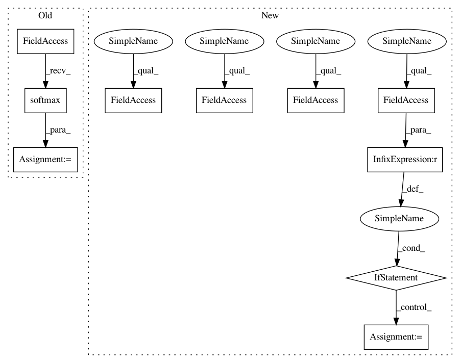

7331bc49dab2d0078054b25500890f8d3eb7733e,mnist-collection/classification.py,,train,#,107
Before Change
nn.save_parameters(parameter_file)
// append F.Softmax to the prediction graph so users see intuitive outputs
runtime_contents = {
"networks": [
{"name": "Validation",
"batch_size": args.batch_size,
"outputs": {"y": F.softmax(vpred)},
"names": {"x": vimage}}],
"executors": [
{"name": "Runtime",
"network": "Validation",
"data": ["x"],
"output": ["y"]}]}
save.save(os.path.join(args.model_save_path,
"{}_result.nnp".format(args.net)), runtime_contents)
After Change
solver.set_parameters(nn.get_parameters())
start_point = 0
if args.checkpoint is not None:
// load weights and solver state info from specified checkpoint file.
start_point = load_checkpoint(args.checkpoint, solver)
// Create monitor.
from nnabla.monitor import Monitor, MonitorSeries, MonitorTimeElapsed
monitor = Monitor(args.monitor_path)
monitor_loss = MonitorSeries("Training loss", monitor, interval=10)
monitor_err = MonitorSeries("Training error", monitor, interval=10)
monitor_time = MonitorTimeElapsed("Training time", monitor, interval=100)
monitor_verr = MonitorSeries("Test error", monitor, interval=10)
// save_nnp
contents = save_nnp({"x": vimage}, {"y": vpred}, args.batch_size)
save.save(os.path.join(args.model_save_path,
"{}_result_epoch0.nnp".format(args.net)), contents)
// Initialize DataIterator for MNIST.
from numpy.random import RandomState
data = data_iterator_mnist(args.batch_size, True, rng=RandomState(1223))
vdata = data_iterator_mnist(args.batch_size, False)
// Training loop.
for i in range(start_point, args.max_iter):
if i % args.val_interval == 0:
// Validation
ve = 0.0
for j in range(args.val_iter):
vimage.d, vlabel.d = vdata.next()
vpred.forward(clear_buffer=True)
vpred.data.cast(np.float32, ctx)
ve += categorical_error(vpred.d, vlabel.d)
monitor_verr.add(i, ve / args.val_iter)
if i % args.model_save_interval == 0:
// save checkpoint file
save_checkpoint(args.model_save_path, i, solver)
// Training forward
image.d, label.d = data.next()
solver.zero_grad()
In pattern: SUPERPATTERN
Frequency: 3
Non-data size: 10
Instances
Project Name: sony/nnabla-examples
Commit Name: 7331bc49dab2d0078054b25500890f8d3eb7733e
Time: 2020-01-13
Author: Shreenidhi.Ramachnadran@sony.com
File Name: mnist-collection/classification.py
Class Name:
Method Name: train
Project Name: sony/nnabla-examples
Commit Name: 7331bc49dab2d0078054b25500890f8d3eb7733e
Time: 2020-01-13
Author: Shreenidhi.Ramachnadran@sony.com
File Name: mnist-collection/classification.py
Class Name:
Method Name: train
Project Name: NifTK/NiftyNet
Commit Name: 155b3b72f933b13c1d35f63be4b3148e574eced1
Time: 2017-06-16
Author: wenqi.li@ucl.ac.uk
File Name: engine/inference.py
Class Name:
Method Name: run
Project Name: NifTK/NiftyNet
Commit Name: ad987533dc022715a4bbf2da0644cbe4687ccdbc
Time: 2017-06-16
Author: wenqi.li@ucl.ac.uk
File Name: engine/inference.py
Class Name:
Method Name: run